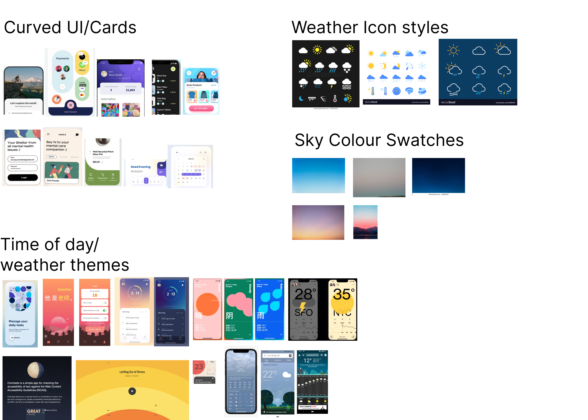

The goal of the app is to give travellers all the information they need while packing for their trip. With an interactive survey and a visual look at the weather and timezone in their destination, users can prepare both physically and mentally. In the end, they have everything they need to enjoy their trip to the fullest.
Problem Definition
Now that COVID-19 airport shutdowns are slowing and more people are vaccinated, travelling has risen in popularity again all over the world. New and seasoned travellers alike may struggle to ensure they bring everything they need to have the most enjoyable trip possible. They also may not be prepared for drastic changes in weather, climate or timezone, which can make a trip less enjoyable.
Jobs To Be Done
As a traveller, I want to pack the right stuff, so that I won’t be without anything during my trip.
Keep track of:
- weather/time difference *unique value add
- items needed for activities
- travel-specific needs
- country differences (currency, adapters, etc)
As a traveller, I want to pack more efficiently so I don’t bring the wrong things.
User tells app:
- where are you going?
- how long?
- what kinds of things will you do?
- what sort of sleeping arrangements do you have provided?
- how will you get around?
As a traveller, I want to keep track of what I’ve packed, so I know what I have and don’t lose anything.
- review generated packing list
- add/remove items to packing list
- check items off to declare as “packed”
Open Survey
As a traveller myself, I had a few pre-conceived notions about trip planning. I wanted a varied opinion set to start from, so I designed a survey and opened it up to the internet to share their thoughts with me. Questions centered around:
- number of trips per year and purpose of trips
- tools used to pack for a trip
- factors that affect packing
- packing tips and tricks
Many people already make a list for packing that they like to reuse, whether it is a digital or physical list. 77% said they use a list or would like to use one.

Activities and weather/climate were the most common factors that would make trip planning difficult.

Most people like to pack what they need but not too much, struggling to find the right balance to fit in their suitcase. Laundry came up several times in the freeform answer section - something I had not thought of personally. These insights gave me my focus for the app and the problems it would solve.
Competitor Research
I divided my competitor research between existing packing apps and weather apps, since my app would be a sort of combination of the two. There are quite a few packing apps already on the market, which gave me a lot to learn from and some lessons on what not to do.
Only one packing app included weather as part of its interface, but forced the user to select from a gender binary as the first step when opening the app. It went downhill from there: most packing apps did not allow for any kind of trip detail entry, acting as a glorified notes app. I knew that both the packing list, and the initial trip detail entry would need to be engaging and certainly do more for the traveller than a static checklist.
Weather apps are actually a pretty fun and diverse product area. Weather tends to affect everyone so this is an app most people have on their phone. The balance between visualizing the current weather and showing intense tables of data is a struggle in most interfaces that I looked at. I thought the immersive nature of visualizing the background as the current weather, like a window to the real world, was very intriguing. Big shoutout to Carrot Weather, which uses a very snarky and funny interface with a sass level selector in case you find it too mean.
Synthesis

Weather is the largest factor for almost every traveller. They will want to know the weather for each day of their trip, in the city they will be in at that time. There is an issue of having the right stuff for multiple climates (even within one day) and when they are travelling to a place with a drastically different temperature than their home.
Activities are the second largest factor, tailing weather by only a smidgen. Travellers want to know how to pack their nice clothing without damaging it. They want to know what they can buy or rent on their trip and what is most necessary to bring.
When packing, travellers want to pack as light as possible while also ensuring they have everything they need. They will do laundry to cut down the amount of clothing they need, and like items that can serve multiple purposes.
Packing lists are not just for items, but can also be a keeping place for notes, TODOs and sharing trip information with one’s travel partner. They can be reused for multiple trips, and can be fine-tuned over time with editing and experience.
Personas
My goal is to make this app useful for new and seasoned travellers, so my personas will reflect that.
Information Architecture
Trip planning can encompass so many aspects, but I wanted to keep this as simple as possible to make the list really shine in what it can do for the traveller. Since so many folks already use a simple list, I wanted this to be a big step up within the same kind of experience.
Flowchart
Information Architecture
Sketches
I like to sketch with a sharpie so I don’t get too bogged down in the details in this stage. Sketching on real paper will always be key for me at this stage to let the creative juices flow as best they can.
Wireframes & Usability Test 1
I like to create an early wireframe set and get it in front of test subjects as soon as possible before I get too deep into the screen design. All my sketching had gotten me so excited that I created two styles for both the trip survey and packing list, with which I conducted moderated A/B testing on five test subjects.
My script included moving through the trip survey using the test subject’s own real upcoming travel plans, and then interacting with the generated packing list. I created the flows with Figma Prototyping and shared the link with subjects to complete directly on their own shared screen. Even while alternating which flow I sent users through first, 80% preferred the card survey over the chatbot. There can be a sense of urgency when messaging with a chatbot, thinking that they are waiting for your answer impatiently and may time out at any moment.
I also found users were confused when they were looking at weather, with the question of whether this was the weather right now or would be the weather during the trip.
The biggest realization I had was that even the most tech-savvy testers were confused when they didn’t see a visual checkbox for each item. Even after tapping items and discovering a line would draw itself through them, that was not their expectation for a packing list.
Moodboard
After integrating all the feedback from the testing sessions, I went back to my original visual inspiration and organized all of it into a sort of moodboard. Since packing can be stressful I wanted to explore curved UI with no sharp edges. This would carry a calming mood along with various symbolism of sky and weather. Around this time I decided to play with the concept of day/night mode to reflect time of day in the destination. I started looking at photos of the sky at different times of day and drew my colour and tone from that.
Usability Testing 2
With my moodboard inspiration added to my current mid-fidelity mocks, I was ready for another usability testing session with five new subjects. I ran them through the same set of tasks as the first test, noting a quicker understanding of some elements I had fixed. There were also new questions relating to the new visual elements I had introduced, such as animated transitions and overlays.
I had since fixed the question of when the weather was being displayed for, by including the current time at the destination right beside it (successfully signifying “now”). More of the feedback this time around was edge cases of real trips these users had taken, which told me that the app was looking more real and believable.
"I love how simple this is"
Referencing tips feature: “Here’s the value add”
“This is very basic and user friendly”
“You changed my mind about not using a list to pack”
Presenting DayPack
This is Figma prototype that you can scroll and interact with to plan your trip. Try it out!
A selection of screens from the app (dare you to find these in the prototype!)